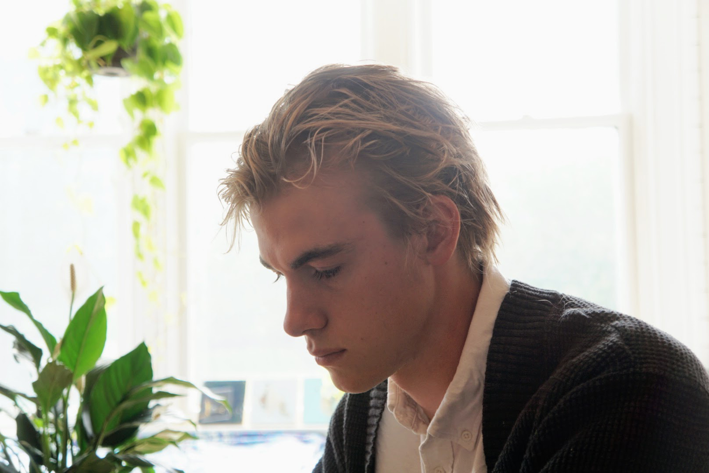

The work is an effort to describe the constructed qualities of climate change and landscape. Sections of material adopt a measured and contained aesthetic, while other sections resist this unity and reflect growth, variety, and decay. The gridded and organic components of my work suggest that the natural and built worlds are intertwined but are part of a precarious system on the verge of collapse. Like a scientific or economic model, my artwork is a collection of elements: materials, data, aesthetic components -- each contributing to the built environment it comes to represent.
